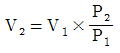
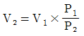
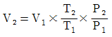
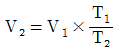
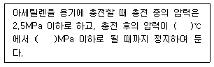
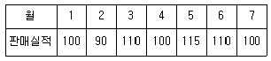
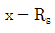
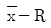

가스기능장 (2012-04-08 기출문제)
1과목: 임의 구분
1. 도시가스 누출 시 냄새에 의한 감지를 위하여 냄새나는 물질을 첨가하는 올바른 방법은?
- 1/100의 상태에서 감지 가능할 것
- 1/500의 상태에서 감지 가능할 것
- 1/1000의 상태에서 감지 가능할 것
- 1/2000의 상태에서 감지 가능할 것
(정답률: 81%)

2. 지상에 설치하는 액화석유가스의 저장탱크 안전밸브에 가스 방출관을 설치하고자 한다. 저장탱크의 정상부가 지상에서 8m 일 경우 방출관의 높이는 지상에서 몇 미터 이상이여야 하는가?
- 2m
- 5m
- 8m
- 10m
(정답률: 78%)
3. 도시가스사업 구분에 따라 선임하여야 할 안전관리자별 선임 인원과 선임 가능한 자격이 잘못 짝지어진 것은? (단, 안전관리자의 자격은 선임 가능한 자격 중 1개만이 제시되어 있다.)
- 가스도매사업 : 안전관리책임자 - 사업장마다 1인 - 가스기술사
- 가스도매사업 : 안전관리원 사업장마다 10인 이상 - 가스기능사
- 일반도시가스사업 : 안전관리책임자 - 사업장마다 1인 - 가스기능사
- 일반도시가스사업 : 안전관리원 - 5인 이상(배관길이가 200km 이하인 경우) - 가스기능사
(정답률: 86%)
4. 표준기압 1atm 은 몇 kgf/cm2 인가? (단, Hg의 밀도는 13595.1kg/m3, 중력가속도는 9.80665m/s2이다.)
- 0.9806
- 1.0332
- 1013.25
- 10332
(정답률: 84%)
5. 다음 중 와류의 규칙성과 안전성을 이용하는 유량계는?
- 델타미터
- 로터미터
- 전자식 유량계
- 열선식 유량계
(정답률: 65%)
6. 도시가스 성분 중 일산화탄소의 함유율은 몇 vol%를 초과하지 아니하여야 하는가?
- 1
- 3
- 5
- 7
(정답률: 55%)
7. 가스나 체류된 작업장에서의 허용농도가 가장 낮은 것은?
- 시안화수소
- 황화수소
- 산화에틸렌
- 포스겐
(정답률: 82%)
8. 가연성가스(LPG 제외) 및 산소의 차량에 고정된 저장탱크 내용적의 기준으로 옳은 것은?
- 저장탱크의 내용적은 10000L 를 초과할 수 없다.
- 저장탱크의 내용적은 12000L 를 초과할 수 없다.
- 저장탱크의 내용적은 15000L 를 초과할 수 없다.
- 저장탱크의 내용적은 18000L 를 초과할 수 없다.
(정답률: 88%)
9. 어떤 용기에 액체질소 56kg이 충전되어 있다. 외부에서의 열이 매시간 10kcal 씩 액체질소에 공급될 때 액체질소가 28kg 으로 감소되는데 걸리는 시간은? (단, N2 의 증발잠열은 1600cal/mol 이다.)
- 16시간
- 32시간
- 160시간
- 320시간
(정답률: 61%)
10. 가연성 가스 검출기에 대한 설명으로 옳은 것은?
- 안전등형은 황색불꽃의 길이로서 C2H2 의 농도를 알 수 있다.
- 간섭계형은 주로 CH4 의 측정에 사용되나 가연성가스에도 사용이 가능하다.
- 간섭계형은 가스 전도도의 차를 이용하여 농도를 측정하는 방법이다.
- 열선형은 리액턴스회로의 정전전류에 의하여 가스의 농도를 측정하는 방법이다.
(정답률: 74%)
11. LPG 1L는 기체 상태로 변하면 250L 가 된다. 20kg의 LPG가 기체 상태로 변하면 부피는 약 몇 m3가 되는가? (단, 표준상태이며, 액체의 비중은 0.5 이다.)
- 1
- 5
- 7.5
- 10
(정답률: 51%)
12. 고압가스 냉동 제조의 시설 및 기술기준에 대한 설명으로 틀린 것은?
- 냉매설비에는 긴급사태가 발생하는 것을 방지하기위하여 자동제어장치를 설치할 것
- 독성가스를 사용하는 내용적이 1만 L 이상인 수액기 주위에는 액상의 가스가 누출될 경우에 그 유출을 방지하기 위한 조치를 마련할 것
- 안전밸브 또는 방출밸브에 설치된 스톱밸브는 그 밸브의 수리 등을 위하여 특별히 필요한 때를 제외하고는 항상 닫아둘 것
- 냉매설비에는 그 설비안의 압력이 상용압력을 초과하는 경우 즉시 그 압력을 상용압력 이하로 되돌릴 수 있는 안전장치를 설치할 것
(정답률: 93%)
13. 고압가스 냉동제조시설의 냉매설비와 이격거리를 두어야 할 화기설비의 분류 기준으로 맞지 않는 것은?
- 제1종 화기설비 : 전열면적이 14m2를 초과하는 온수보일러
- 제2종 화기설비 : 전열면적이 8m2 초과, 14m2 이하인 온수보일러
- 제3종 화기설비 : 전열면적이 10m2 이하인 온수보일러
- 제1종 화기설비 : 정격 열출력이 500,000kcal/h를 초과하는 화기설비
(정답률: 83%)
14. 가스가 65kcal의 열량을 흡수하여 10000kgfㆍm의 일을 하였다. 이 때 가스의 내부에너지 증가는 약 몇 kcal 인가?
- 32.4
- 38.7
- 41.6
- 57.2
(정답률: 45%)
15. 다음 가스 중 공기와 혼합하였을 때 폭발성 혼합 가스를 형성할 수 있는 것은?
- 산화질소
- 염소
- 암모니아
- 질소
(정답률: 69%)
16. 지구 온실효과를 일으키는 주된 원인이 되는 가스는?
- CO2
- O2
- NO2
- N2
(정답률: 94%)
17. 저장능력이 30톤인 저장탱크를 지하에 설치하였다. 점검구의 설치기준에 대한 설명으로 틀린 것은?
- 점검구는 2개소를 설치하였다.
- 점검구는 저장탱크 측면 상부의 지상에 설치하였다.
- 점검구는 저장탱크실 상부 콘크리트 타설 부분에 맨홀형태로 설치하였다.
- 사각형 모양의 점검구로서 0.6m×0.6m의 크기로 하였다.
(정답률: 78%)
18. 도시가스 사업 허가의 세부기준이 아닌 것은?
- 도시가스가 공급 권역안에서 안정적으로 공급될 수 있도록 할 것
- 도시가스 사업계획이 확실히 수행될 수 있을 것
- 도시가스를 공급하는 권역이 중복되지 않을 것
- 도시가스 공급이 특정지역에 집중되어 있어야 할 것
(정답률: 93%)
19. 배관의 수직상향에 의한 압력손실을 계산하려고 할 때 반드시 고려되어야 하는 것은?
- 입상 높이, 가스 비중
- 가스 유량, 가스 비중
- 가스 유량, 입상 높이
- 관 길이, 입상 높이
(정답률: 91%)
20. 이상기체를 일정한 온도 조건하에서 상태 1에서 상태 2로 변화시켰을 때 최종 부피는 얼마인가? (단, 상태 1에서의 부피 및 압력은 V1 과 P1 이며, 상태 2에서의 부피와 압력은 각각 V2 와 P2 이다.)




(정답률: 86%)
2과목: 임의 구분
21. 대기압 750mmHg 하에서 게이지 압력이 2.5kgf/cm2이다. 이 때 절대압력은 약 몇 kgf/cm2 인가?
- 2.6
- 2.7
- 3.1
- 3.5
(정답률: 54%)
22. 양단이 고정된 20㎝ 길이의 환봉을 10℃에서 80℃ 로 가열하였을 때 재료내부에서 발생하는 열응력은 약 몇 MPa 인가? (단, 재료의 선팽창계수는 11.⑤×10-6/℃ 이며, 탄성계수 E 는 210GPa 이다.)
- 69.62
- 162.44
- 696.15
- 2784.60
(정답률: 55%)
23. 비소모성 텅스텐 용접봉과 모재간의 아크열에 의해 모재를 용접하는 방법으로 용접부의 기계적 성질이 우수하나 용접속도가 느린 용접은?
- TIG 용접
- 아크 용접
- 산소 용접
- 서브머지드 아크 용접
(정답률: 88%)
24. 고압가스 제조설비의 가스설비 점검 중 사용개시전 점검 사항이 아닌 것은?
- 가스설비의 전반에 대한 부식, 마모, 손상 유무
- 독성가스가 체류하기 쉬운 곳의 해당가스 농도
- 각 배관계통에 부착된 밸브 등의 개폐상황
- 가스설비의 전반적인 누출 유무
(정답률: 59%)
25. 크리프(Creep)는 재료가 어떤 온도하에서는 시간과 더불어 변형이 증가되는 현상인데, 일반적으로 철강 재료 중 크리프 영향을 고려해야 할 온도는 몇 ℃ 이상일 때 인가?
- 50℃
- 150℃
- 250℃
- 350℃
(정답률: 82%)
26. 다음 중 외압이나 지진 등에 대하여 가요성이 가장 우수한 주철관 이음은?
- 메카니컬 이음
- 소켓 이음
- 빅토릭 이음
- 플랜지 이음
(정답률: 90%)
27. 모노게르만 가스의 특징이 아닌 것은?
- 가연성, 독성가스이다.
- 자극적인 냄새가 난다.
- 전지산업의 도핑용액으로 주로 사용된다.
- 공기보다 가벼워 대기 중으로 확산한다.
(정답률: 77%)
28. 다음 ( ) 안의 온도와 압력으로 맞는 것은?

- 5, 1.0
- 15, 1.5
- 20, 1.0
- 20, 1.5
(정답률: 94%)
29. 다음 수소의 성질 중 화재, 폭발 등의 재해발생 원인이 아닌 것은?
- 임계압력이 12.8atm 이다.
- 가벼운 기체로 미세한 간격으로 퍼져 확산하기 쉽다.
- 고온, 고압에서 강철에 대하여 수소취성을 일으킨다.
- 공기와 혼합할 경우 연소범위가 4~75% 이다.
(정답률: 83%)
30. 가스 정압기에서 메인밸브의 열림과 유량과의 관계를 의미하는 것은?
- 정특성
- 동특성
- 유량특성
- 사용압력공차
(정답률: 83%)
31. 독성가스 사용설비에서 가스누출에 대비하여 반드시 설치하여야 하는 장치는?
- 살수장치
- 액화방지장치
- 흡수장치
- 액화수장치
(정답률: 89%)
32. 내용적 5L인 용기에서 에탄 1500g을 충전하였다. 용기의 온도가 100℃일 때 압력은 220atm을 표시하였다. 이때 에탄의 압축계수는 얼마인가?
- 0.03
- 0.60
- 0.72
- 2.68
(정답률: 63%)
33. 내용적이 1800L인 저장탱크에 LPG를 저장하려고 한다. 이 탱크의 저장능력(kg)은? (단, LPG 의 비중은 0.5 이다.)
- 790
- 810
- 820
- 900
(정답률: 59%)
34. 1000rpm 으로 회전하는 펌프를 2000rpm 으로 변경하였다. 이 경우 펌프 동력은 몇 배가 되겠는가?
- 1
- 2
- 4
- 8
(정답률: 51%)
35. 다음 중 품질 코스트(Cost)의 구성이 아닌 것은?
- 예방 코스트
- 평가 코스트
- 실패 코스트
- 설계 코스트
(정답률: 64%)
36. 일반도시가스사업자의 가스공급시설 중 정압기의 시설 및 기술기준에 대한 설명으로 틀린 것은?
- 단독사용자의 정압기에는 경계책을 설치하지 아니할 수 있다.
- 단독사용자의 정압기실에는 이상압력통보설비를 설치하지 아니할 수 있다.
- 단독사용자의 정압기에는 예비정압기를 설치하지 아니할 수 있다.
- 단독사용자의 정압기에는 비상전력을 갖추지 아니할 수 있다.
(정답률: 82%)
37. 도시가스 배관의 전기방식에 대한 내용 중 틀린 것은?
- 직류전철 등에 의한 누출전류의 영향을 받지 않는 배관에는 배류법으로 한다.
- 배류법에 의한 배관에는 300m 이내의 간격으로 T/B를 설치한다.
- 배관 등과 철근콜트리트구조물 사이에는 절연조치를 한다.
- 전기방식이란 배관의 외면에 전류를 유입시켜 양극 반응을 저지하는 것이다.
(정답률: 68%)
38. 공기 중에서 프로판가스의 폭발 범위의 값으로 옳은 것은?
- 1.8~8.4%
- 2.2~9.5%
- 3.0~12.5%
- 5.3~14%
(정답률: 84%)
39. 아세틸렌 제조 시 청정제로 사용되지 않는 것은?
- 리가슬
- 카타리솔
- 에퓨렌
- 카보퓨란
(정답률: 76%)
40. 외경 15cm, 내경 8cm의 중공원통(中空圓筒)에 축방향으로 60ton의 압축하중이 작용할 때 생기는 응력은?
- 327kg/cm2
- 474kg/cm2
- 547kg/cm2
- 1560kg/cm2
(정답률: 53%)
3과목: 임의 구분
41. 압축비가 클 때 압축기에 미치는 영향으로 틀린 것은?
- 체적효율 증대
- 소요동력 증대
- 토출가스 온도 상승
- 윤활유 열화
(정답률: 78%)
42. 액화산소를 저장하는 저장능력 10톤인 저장탱크를 2기 설치하려고 한다. 각각의 저장탱크 최대지름이 3m일 경우 저장탱크 간의 최소거리는 몇 m 이상 유지하여야 하는가?
- 1
- 1.5
- 2
- 3
(정답률: 82%)
43. 굴착공사로 인하여 15m 이상 노출된 도시가스배관 주위 조명은 최소 얼마 이상으로 하여야 하는가?
- 70 Lx 이상
- 80 Lx 이상
- 90 Lx 이상
- 100 Lx 이상
(정답률: 75%)
44. 일반도시가스사업자 정압기 입구축의 압력이 0.6Mpa일 경우 안전밸브 분출부의 크기는 얼마 이상으로 하여야 하는가?
- 30A 이상
- 50A 이상
- 80A 이상
- 100A 이상
(정답률: 67%)
45. 이상기체의 상태방정식 PV=nRT에서 R의 단위가 J/mol ㆍ K 이면 기체상수(R) 값은 얼마인가?
- 0.082
- 1.987
- 8.314
- 848
(정답률: 88%)
46. 처리능력 25톤인 액화석유가스 탱크 2개가 있다. 이 때 제 2종 보호시설과의 거리는 얼마 이상 유지하여야 하는가?
- 14m
- 16m
- 18m
- 20m
(정답률: 52%)
47. 고압가스 운반 시 가스누출사고가 발생하였다. 이 부분의 수리가 불가능한 경우 재해발생 또는 확대를 방지하기 위한 조치사항으로 볼 수 없는 것은?
- 착화된 경우 소화작업을 실시한다.
- 상황에 따라 안전한 장소로 운반한다.
- 비상 연락망에 따라 관계업소에 원조를 의뢰한다.
- 부근의 화기를 없앤다.
(정답률: 86%)
48. N2 70mol, O2 50mol로 구성된 혼합가스가 용기에 7kgf/cm2의 압력으로 충전되어 있다. N2 의 분압은?
- 3kgf/cm2
- 4kgf/cm2
- 5kgf/cm2
- 6kgf/cm2
(정답률: 69%)
49. 기체의 열용량에 대한 설명으로 맞는 것은?
- 열용량이 작으면 온도를 변화시키기 어렵다.
- 이상기체의 정압열용량(Cp)과 정적열용량(Cv)의 차는 기체상수 R 과 같다.
- 공기에 대한 정압비열과 정적비열의 비(Cp/Cv)는 2.4 이다.
- 정압 몰 열용량은 정압비열을 몰질량으로 나눈 값이다.
(정답률: 73%)
50. 30℃, 2atm에서 산소 1mol 이 차지하는 부피는 얼마인가? (단, 이상기체의 상태방정식에 따른다고 가정한다.)
- 6.2 L
- 8.4 L
- 12.4 L
- 24.8 L
(정답률: 71%)
51. 표준상태에서 질소 5.6L 중에 있는 질소 분자수는 다음의 어느 것과 같은가?
- 0.5g 수소분자
- 16g의 산소분자
- 1g의 산소원자
- 4g의 수소분자
(정답률: 79%)
52. 초저온 용기의 단열성능시험에 대한 설명으로 옳은 것은?
- 기화량은 저울 또는 유량계를 사용하여 측정한다.
- 100개의 용기기준으로 10개를 샘플링하여 검사한다.
- 검사에 부적합된 용기는 전량 폐기한다.
- 시험용 가스는 액화 프로판을 사용하여 실시한다.
(정답률: 58%)
53. 독성가스 검지법에 의한 가스별 착색반응지와 색깔의 연결이 잘못된 것은?
- 일산화탄소 : 염화파라듐지 - 흑색
- 이산화질소 : KI전분지 - 청색
- 황화수소 : 연당지 - 황갈색
- 아세틸렌 : 리트머스시험지 - 청색
(정답률: 73%)
54. 완전가스의 상태변화에서 가열량 변화가 내부에너지 변화와 같은 것은?
- 등압변화(等壓變化)
- 등적변화(等積變化)
- 등온변화(等溫變化)
- 단열변화(斷熱變化)
(정답률: 50%)
55. 여유시간이 5분, 정미시간이 40분일 경우 내경법으로 여유율을 구하면 약 몇 % 인가?
- 6.33%
- 9.⑤%
- 11.11%
- 12.50%
(정답률: 68%)
56. 로트에서 랜덤하게 시료를 추출하여 검사한 후 그 결과에 따라 로트의 합격, 불합격을 판정하는 검사방법을 무엇이라 하는가?
- 자주검사
- 간접검사
- 전수검사
- 샘플링검사
(정답률: 93%)
57. 다음과 같은 [데이터]에서 5개월 이동평균법에 의하여 8월의 수요를 예측한 값은 얼마인가?

- 103
- 1⑤
- 107
- 109
(정답률: 73%)
58. 관리 사이클의 순서를 가장 적절하게 표시한 것은? (단, A는 조치(Act), C는 체크(Check), D는 실시 (Do), P는 계획(Plan)이다.)
- P → D → C → A
- A → D → C → P
- P → A → C → D
- P → C → A → D
(정답률: 88%)
59. 다음 중 계량값 관리도만으로 짝지어진 것은?
- c 관리도, u 관리도

관리도, P 관리도 관리도, nP 관리도
관리도, nP 관리도- Me-R 관리도,

관리도
(정답률: 63%)
60. 다음 중 모집단위 중심적 경향을 나타낸 측도에 해당하는 것은?
- 범위(Range)
- 최빈값(Mode)
- 분산(Variance)
- 변동계수(Coefficient of variation)
(정답률: 84%)